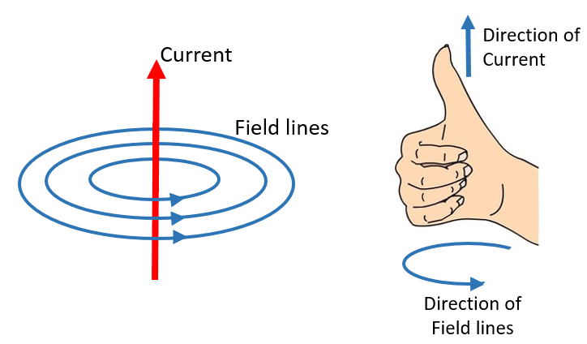
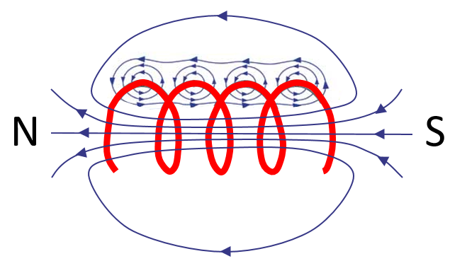
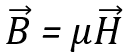

HOME BLOG EBOOKS ABOUT CONTACT SHOP
Static charges produce electric field around them, but charges in motion also produces another kind of field called the magnetic field. It was the Danish physicist Hans Christian Orsted who first observed that a magnetic field surrounds a current carrying object, back in 1820.
The most fundamental idea in electromagnetism is that there is magnetic field surrounding every current carrying object. These magnetic fields take the shape of concentric rings around a straight wire, called the magnetic field lines. Larger the current flowing through wire, more the no. of magnetic field lines. These lines are not random, they have a direction and it can be determined by using the Right hand thumb rule. It goes like this, if you point your thumb in the direction of the current, then the fingers curl in the direction of the field lines.

Similarly, when current flows through a coil (called Solenoids), a magnetic field is generated around it, such that the coil acts like a magnet with a north and south polarity. The pattern of field lines is as shown below.

Note that the field lines are concentric if you consider a tiny portion of the coil, but these field lines add and cancel each other giving us this effective pattern.
Just like how the Electric field intensity is a measure of strength of the Electric field, the Magnetic field Intensity denoted as H, is a measure of the strength of a Magnetic field. It is a vector quantity and its unit is Amperes per metre (A/m).
Magnetic flux density (B) on the other hand is the analogous to Electric flux density (D) in electrostatics. It is the total number of magnetic lines of force passing through a unit area. It is also a vector quantity and its unit is Weber per metre square (Wb/m2) or Tesla.
Both magnetic field intensity & magnetic flux density are measures of strength of magnetic field, but the difference is that the Magnetic flux density depends on the nature of medium.The two quantities are related to each other as,

Where μ is called the permeability of the medium. It is a measure of the resistance of a material against the formation of a magnetic field. For free space, permeability is denoted as μ0 and has a value of 4 x 10-7 H/m.